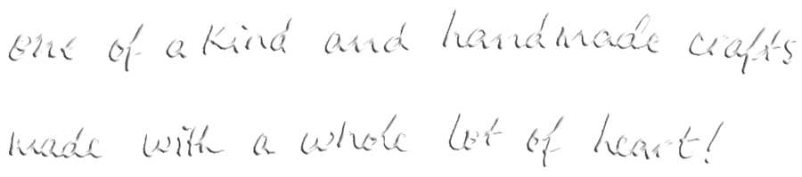
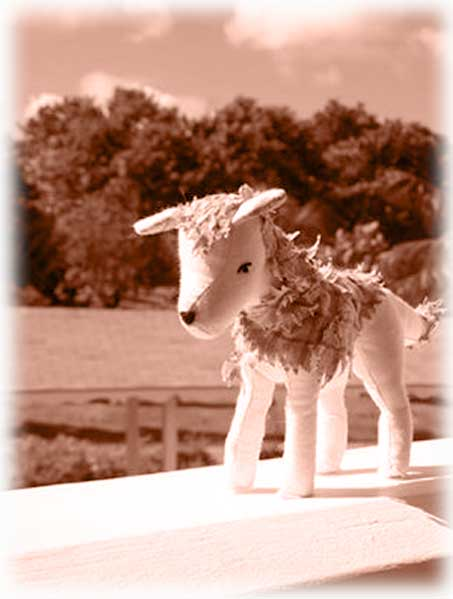

About Sister Valentine's Hearts & Crafts

having been raised on weekly crafting sessions and the muppet show, F. has always been creating throughout her life whether it be with words, paper, mixed media and later on with a whole lot of yarn.
she was taught how to crochet at 10 and didn't go much further than hacky sacks and little satchels until years later when she rediscovered the crochet needle and ran away with it over the moon and back.